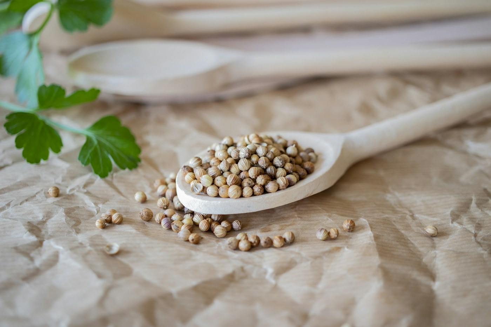
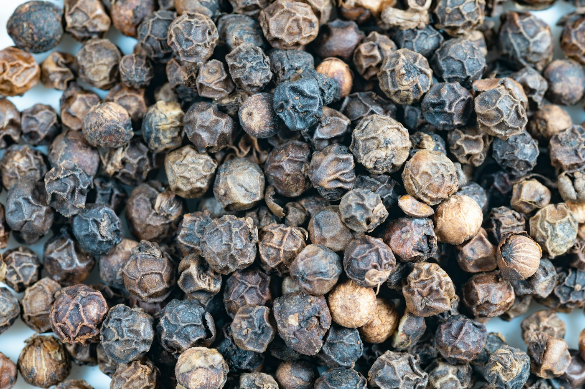

Coriandre et poivre noir sélectionnés, entre production locale et approvisionnement international
Coriandre et poivre noir sélectionnés, entre production locale et approvisionnement international
Les Greniers du Saïss élargit sa gamme aux épices, avec une sélection rigoureuse de coriandre et de poivre noir. La coriandre est cultivée localement au Maroc, tandis que le poivre noir est importé des grandes régions productrices internationales. Nos épices répondent aux exigences de qualité et de traçabilité des industriels de l'agroalimentaire et des négociants.

Coriandre
Local · Maroc

Poivre noir
Import · Inde, Vietnam
Sacs de 25 kg ou 50 kg, big bags de 500 kg, conditionnement adapté aux normes d'exportation alimentaire.
Assaisonnement, transformation agroalimentaire, charcuterie et conserves.
Livraison internationale, documentation complète, conditionnement aux normes de l'import et de l'export.
Semences de coriandre sélectionnées pour la culture et la rotation des cultures.